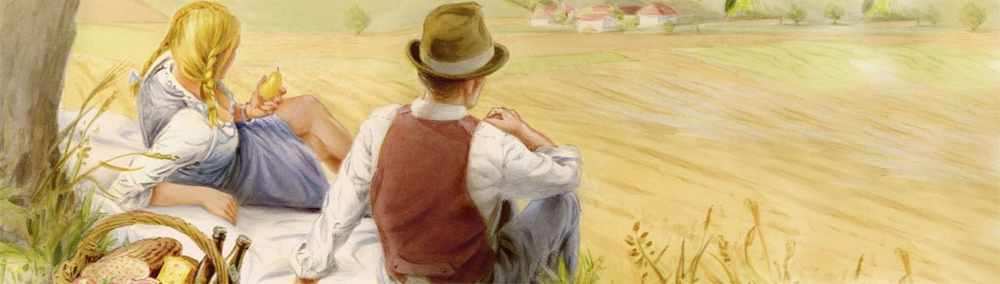

Am Stadtplatz in Altheim
Brauerei, Braugasthof und Büro liegen unter einer Adresse. Rufen Sie an, schreiben Sie uns – oder kommen Sie einfach vorbei.

Wurmhöringer
Wurmhöringer Privatbrauerei –
Braugasthof e.U.
Wurmhöringer Transport- und Handels GmbH
Stadtplatz 10/11
4950 Altheim, Oberösterreich
Tel. +43 7723 422 04
Fax +43 7723 426 18
info@wurmhoeringer.at
Direkt anfragen
Tisch, Feier, Getränkebestellung oder Bewerbung – für jedes Anliegen gibt es ein eigenes Formular.
Tisch reservieren
Feier anfragen
Getränke bestellen
Bewerbung senden
Gutschein bestellen
Bei Paketen, Gutscheinen und Ähnlichem bitte vorher anrufen.
Folgen Sie uns
Aktuelles aus Gasthof und Brauerei – Mittagsmenü, Neuheiten und Termine.
Instagram Braugasthof
Instagram Wurmhöringer Bier
Facebook Wurmhöringer
Facebook Wurmhöringer Bier
| Montag | 10:00–14:00 Uhr |
|---|---|
| Dienstag–Donnerstag | 10:00–14:00 und 17:00–24:00 Uhr |
| Freitag–Sonntag | Ruhetag |
| Küche | 11:00–14:00 und 17:00–21:00 Uhr |
| Montag–Freitag | 08:00–12:00 Uhr 12:30–16:30 Uhr |
|---|---|
| Samstag, Sonntag | geschlossen |
| Montag–Freitag | 7:30–11:30 Uhr 13:00–16:30 Uhr |
|---|---|
| Samstag | 9:30–11:00 Uhr |
So finden Sie uns
Der Betrieb liegt direkt am Stadtplatz von Altheim, zwischen Ried im Innkreis und Braunau am Inn. Die Therme Geinberg ist rund 3 Kilometer entfernt.
Busse und Reisegruppen melden sich bitte vorab an, damit wir die Zufahrt und den Platz im Haus vorbereiten können.
Gut zu wissen
Muss ich einen Tisch reservieren?
Wann hat die Küche geöffnet?
Sind Busgruppen willkommen?
Kann ich Bier direkt in der Brauerei kaufen?
Welche Fassgrößen gibt es?
Gibt es ein alkoholfreies Bier?
Wo bekomme ich einen Gutschein?
Sind Ihre Produkte auch im Handel erhältlich?
Neues aus Gasthof und Brauerei
Mittagsmenü, saisonale Karte, Festbock-Anstich und neue Getränke – alle paar Wochen kompakt per E-Mail.